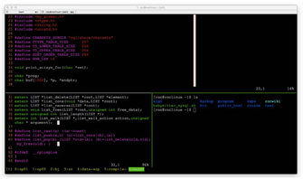
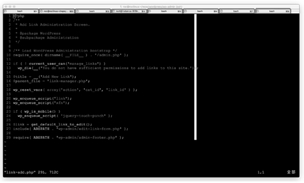
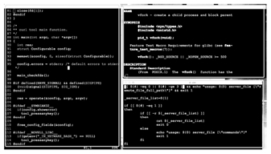
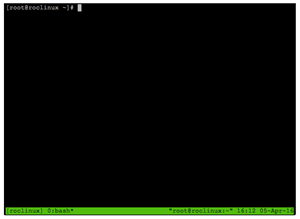
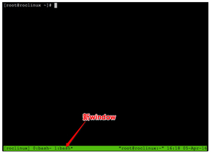

首页 > 编程笔记
tmux命令_Linux tmux命令：一个窗口操作多个会话
为大家介绍一位新朋友——tmux。有人会问，tmux 这个名字看着很酷，怎么取的这个名字呢？其实 tmux 是两个单词的缩写，即“Terminal MultipleXer”，意思是“终端复用器”。原来这是一个很没创意的名字，只是英文缩写看着很酷罢了，哈哈！
tmux 是一个可以让人们通过一个窗口操作多个会话的工具，对于经常操作 Linux 系统的同学来说，绝对是一款提升工作效率的利器，一会儿我们就会感受到它的强大和灵活。
让我们来看看 tmux 的芳容，如图 1 所示。
在这期间，一旦我们的远程连接工具所在的工作电脑出现断网或断电的情况，那么很多耗时较长的操作就会因此中断，这是所有运维、开发同学都很头疼的一个问题。下面，我们就先给大家列出一些典型的痛点。
痛点一：大数据传输的漫长一夜
相信做过 Linux 服务运维的同学，都用 scp 进行过服务器间的大文件网络传输。一般这需要很长的时间，这期间，如果工作电脑出现断网或者断电的情况，则会导致远程连接工具无法与服务器通信，从而使得它所控制的数据传输也因此中断。
情景再现：
一个 17GB 的大文件，刚刚开始传输，预估耗时 6 小时 19 分钟，谁能保证中间不出现关机和断电的情况呢。
有些同学说可以用 nohup 来解决啊，是的，这是一个办法，可是使用 nohup 的问题在于如果同时传输的任务众多，则最后你自己可能都分不清哪个任务对应哪个传输了，何况 nohup 还会留下 nohup.out 这么一个临时文件在那里。
还有同学说，即使中断了，也可以断点续传啊。可惜的是，scp 并不支持断点续传。如果改用 rsync 倒是可以，可惜 rsync 参数用起来很是复杂，谁能保证每位运维工程师都能熟练掌握那么多复杂的参数呢？这个时候，请试一试 tmux 吧！
痛点二：正在编译却被拉去开会
和大文件数据传输情况类似，一些大型的开发项目的代码编译过程，往往也需要很长的时间，短则几分钟，长则一通宵。对于一通宵的编译来说，这要是中间出现断网断电，那就相当悲剧了。整个项目进展就又要向后推迟至少一天。这个时候，我们向你推荐 tmux！
痛点三：多个窗口切换到晕
作为运维工程师，一定有过在众多窗口间切换，查看各种服务器上的信息和状态的情况，这个时候，如果没有一款好用的窗口管理软件，过不了多久，你就会晕头转向了。就像图 2 所示的这种情况。
痛点四：一屏显示多窗口之殇
有时候为了进行多文件内容对比，如果没有一款很好用的分屏管理工具，那么我们只好创建多个终端，然后手动调整它们的大小和位置，如图 3 所示。
tmux 依赖于 libevent 库和 ncurses 库，所以如果你的系统中原本没有这两个库的话，yum 会在安装时自动一并安装上。
如果你的服务器的系统是 ubuntu，那么安装也很简单：
如果你的服务器的系统是 OS X Server，仍然是一条命令搞定：
brew 是苹果系统中常用的包管理工具，如果你的 OS X Server 提示你没有 brew 命令的话，则要事先安装这个包管理工具：
首先，我们使用远程登录工具，登录到远程服务器上，然后执行下面的命令：
2.再创建一个新的窗口
在创建会话的同时，tmux 会在会话中创建一个窗口（tmux window），就是图 4 中的 0：bash。
好了，我们试着再创建一个窗口：
看！最底部是不是出现了一个 1：bash，如图 5 所示。
细心的同学可能会提出一个问题，为什么刚才星号（*）是在 0：bash 后面，而现在却到了 1：bash 后面呢？
这是个好问题，星号（*）在这里表示的是“当前处于活跃状态的窗口”，也就是哪个窗口现在处于可操作状态，星号（*）就在哪个窗口的后面。这回知道了吧。
3.在窗口间切换
既然，我们在 roclinux 这个 session 中已经有了两个窗口，那么如果想在两个窗口间进行切换，应该怎么操作呢？
很简单，假如我们要切换到 0：bash 这个窗口，步骤如下：
看，我们刚才说的星号（*）是不是已经悄悄移动到 0：bash 的后面啦。同理，在按下 Ctrl+B 组合键后，按相应数字键，就可以切换到相应的窗口了。就是这么简单！
4.退出会话，还能再回来
现在，我们切换到 0：bash，运行一个命令：
这个命令会每隔 2 秒钟更新一次内存使用状态，如果不输入 Ctrl+C，则永远不会退出。
假如这时候你要带着办公电脑去开会，你的电脑要断网，又不想中断服务器上正在执行的 watch 命令，怎么办呢？
哈哈，tmux 正好可以派上用场，方法是这样的：
看，tmux 环境消失了！眼前只有一行提示 [detached]：
这表示，我们已经切断了办公电脑和刚才那个 tmux 之间的桥梁。现在如果你要外出，可以放心地关闭你的电脑了。
当你回到家后，打开电脑，连接到你的那台远程服务器，然后执行一个神奇的命令：
看，我们又回到了刚才的状态，那个查看内存使用状态的 watch 命令，在那里乖乖地运行着。这就是 tmux 的神奇之处，它可以让远端服务器的命令，脱离用户自己的电脑来执行，还可以随时召唤回来，继续进行操作和查看。
好了，至此，你已经掌握了最最基本的 tmux 使用方法了。当然，tmux 还有很多更高级的用法，等待着你去发现！
tmux 是一个可以让人们通过一个窗口操作多个会话的工具，对于经常操作 Linux 系统的同学来说，绝对是一款提升工作效率的利器，一会儿我们就会感受到它的强大和灵活。
让我们来看看 tmux 的芳容，如图 1 所示。

图1（点此查看原图）
tmux 能帮我们解决什么问题呢
凡是互联网行业的从业者，无论是做运维的同学，还是做开发的同学，一般都是在自己的工作电脑上安装远程连接工具（如 iTerm、putty、XShell、SecureCRT 等），远程登录到公司服务器上，进行具体的操作，而其中一些操作的耗时会很长。在这期间，一旦我们的远程连接工具所在的工作电脑出现断网或断电的情况，那么很多耗时较长的操作就会因此中断，这是所有运维、开发同学都很头疼的一个问题。下面，我们就先给大家列出一些典型的痛点。
痛点一：大数据传输的漫长一夜
相信做过 Linux 服务运维的同学，都用 scp 进行过服务器间的大文件网络传输。一般这需要很长的时间，这期间，如果工作电脑出现断网或者断电的情况，则会导致远程连接工具无法与服务器通信，从而使得它所控制的数据传输也因此中断。
情景再现：
localhost:~ roc$ ls -hl total 36419584 -rw------- 1 roc staff 17G 1 20 11:06 win7.vdi localhost:~ roc$ scp -P 22000 win7.vdi roc@roclinux.cn:/home/roc win7.vdi 0% 7296KB 800.3KB/s 6:19:05
一个 17GB 的大文件，刚刚开始传输，预估耗时 6 小时 19 分钟，谁能保证中间不出现关机和断电的情况呢。
有些同学说可以用 nohup 来解决啊，是的，这是一个办法，可是使用 nohup 的问题在于如果同时传输的任务众多，则最后你自己可能都分不清哪个任务对应哪个传输了，何况 nohup 还会留下 nohup.out 这么一个临时文件在那里。
还有同学说，即使中断了，也可以断点续传啊。可惜的是，scp 并不支持断点续传。如果改用 rsync 倒是可以，可惜 rsync 参数用起来很是复杂，谁能保证每位运维工程师都能熟练掌握那么多复杂的参数呢？这个时候，请试一试 tmux 吧！
痛点二：正在编译却被拉去开会
和大文件数据传输情况类似，一些大型的开发项目的代码编译过程，往往也需要很长的时间，短则几分钟，长则一通宵。对于一通宵的编译来说，这要是中间出现断网断电，那就相当悲剧了。整个项目进展就又要向后推迟至少一天。这个时候，我们向你推荐 tmux！
痛点三：多个窗口切换到晕
作为运维工程师，一定有过在众多窗口间切换，查看各种服务器上的信息和状态的情况，这个时候，如果没有一款好用的窗口管理软件，过不了多久，你就会晕头转向了。就像图 2 所示的这种情况。

图2（点此查看原图）
这个时候，tmux 可以帮到你！图2（点此查看原图）
痛点四：一屏显示多窗口之殇
有时候为了进行多文件内容对比，如果没有一款很好用的分屏管理工具，那么我们只好创建多个终端，然后手动调整它们的大小和位置，如图 3 所示。

图3（点此查看原图）
其实并不需要这么麻烦，tmux 可以帮助我们轻松分屏！
图3（点此查看原图）
安装tmux
如果你的服务器的系统是 redhat、centos 或 fedora，那么安装会很简单：[root@roclinux ~]# yum install tmux
tmux 依赖于 libevent 库和 ncurses 库，所以如果你的系统中原本没有这两个库的话，yum 会在安装时自动一并安装上。
如果你的服务器的系统是 ubuntu，那么安装也很简单：
[root@roclinux ~]# apt-get install tmux
如果你的服务器的系统是 OS X Server，仍然是一条命令搞定：
$ brew install tmux
brew 是苹果系统中常用的包管理工具，如果你的 OS X Server 提示你没有 brew 命令的话，则要事先安装这个包管理工具：
$ ruby -e "$(curl -fsSL https://raw.githubusercontent.com/Homebrew/ install/master/install)"什么，你的系统没有 ruby？好吧。请自行百度，先老老实实地安装 ruby 吧。
tmux 入门四板斧
1.启动 tmux首先，我们使用远程登录工具，登录到远程服务器上，然后执行下面的命令：
[root@roclinux ~]# tmux new -s roclinux
-s是 session 的缩写，顾名思义，我们启动了一个全新的 tmux 会话（tmux session），并且把这个会话起名叫作 roclinux。这时，映入大家眼帘的就是 tmux 环境了，如图 4 所示。

图4（点此查看原图）
tmux 环境和之前的环境没有什么不同，因此所有的操作与原来一样就好了。图4（点此查看原图）
2.再创建一个新的窗口
在创建会话的同时，tmux 会在会话中创建一个窗口（tmux window），就是图 4 中的 0：bash。
好了，我们试着再创建一个窗口：
- 第一步：按 Ctrl+B 组合键，然后松开。
- 第二步：再单独按一下 c 键。
看！最底部是不是出现了一个 1：bash，如图 5 所示。

图5（点此查看原图）
这说明，我们在 tmux session 中又创建了一个窗口。图5（点此查看原图）
细心的同学可能会提出一个问题，为什么刚才星号（*）是在 0：bash 后面，而现在却到了 1：bash 后面呢？
这是个好问题，星号（*）在这里表示的是“当前处于活跃状态的窗口”，也就是哪个窗口现在处于可操作状态，星号（*）就在哪个窗口的后面。这回知道了吧。
3.在窗口间切换
既然，我们在 roclinux 这个 session 中已经有了两个窗口，那么如果想在两个窗口间进行切换，应该怎么操作呢？
很简单，假如我们要切换到 0：bash 这个窗口，步骤如下：
- 第一步：按 Ctrl-B 组合键，然后松开。
- 第二步：按数字 0 键。
看，我们刚才说的星号（*）是不是已经悄悄移动到 0：bash 的后面啦。同理，在按下 Ctrl+B 组合键后，按相应数字键，就可以切换到相应的窗口了。就是这么简单！
4.退出会话，还能再回来
现在，我们切换到 0：bash，运行一个命令：
[root@roclinux ~]# watch -n 2 free
这个命令会每隔 2 秒钟更新一次内存使用状态，如果不输入 Ctrl+C，则永远不会退出。
假如这时候你要带着办公电脑去开会，你的电脑要断网，又不想中断服务器上正在执行的 watch 命令，怎么办呢？
哈哈，tmux 正好可以派上用场，方法是这样的：
- 第一步：输入组合键 Ctrl+B，然后松开。
- 第二步：输入字母 d。
看，tmux 环境消失了！眼前只有一行提示 [detached]：
[root@roclinux ~]# tmux new -s roclinux [detached]
这表示，我们已经切断了办公电脑和刚才那个 tmux 之间的桥梁。现在如果你要外出，可以放心地关闭你的电脑了。
当你回到家后，打开电脑，连接到你的那台远程服务器，然后执行一个神奇的命令：
[root@roclinux ~]# tmux ls roclinux: 2 windows (created Fri Jan 22 16:30:13 2016) [130x36] [root@roclinux ~]# tmux a -t roclinux
看，我们又回到了刚才的状态，那个查看内存使用状态的 watch 命令，在那里乖乖地运行着。这就是 tmux 的神奇之处，它可以让远端服务器的命令，脱离用户自己的电脑来执行，还可以随时召唤回来，继续进行操作和查看。
好了，至此，你已经掌握了最最基本的 tmux 使用方法了。当然，tmux 还有很多更高级的用法，等待着你去发现！
关注公众号「站长严长生」，在手机上阅读所有教程，随时随地都能学习。内含一款搜索神器，免费下载全网书籍和视频。

微信扫码关注公众号

{kind=link}
{kind=link}
{kind=link}
{kind=link}
{kind=link}